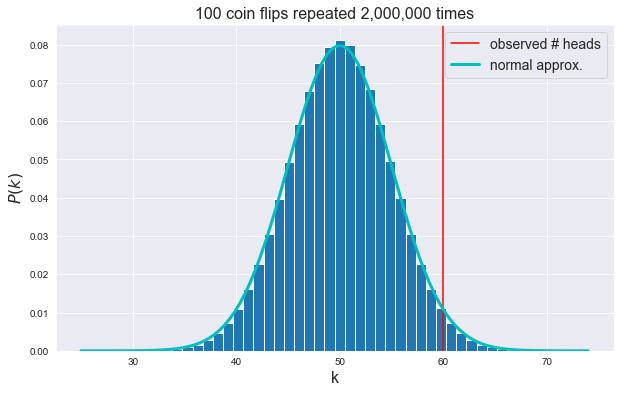
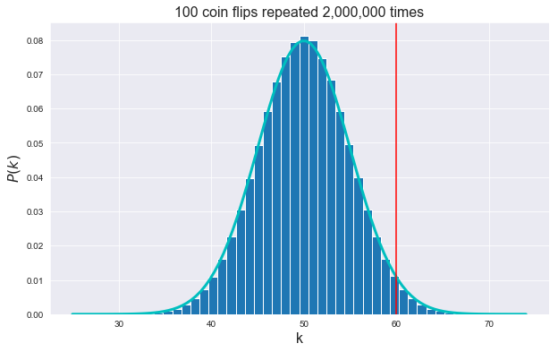
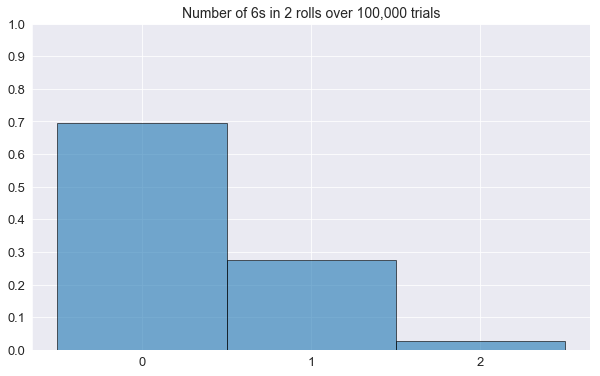
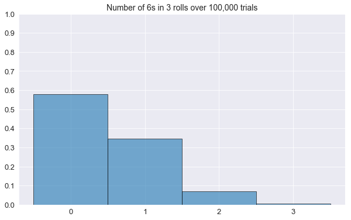
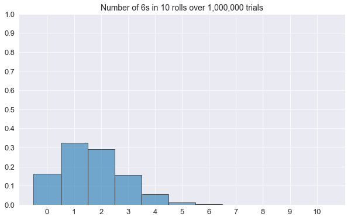

A coin flipped 100 times comes up heads 60 times. How likely is it that the coin is fair?
This is a basic example of statistical inference, trying to infer an estimate of some quantity (here the probability for heads) from some data (observation of 100 coin flips). This type of problem is invariably described in every first year stats course. To solve it, we first need to represent the underlying process generating our observations in a mathematical form. For coin flips, the binomial distribution is the natural choice. Let's affectionately call our random variable representing the number of heads $X$.
The probability of observing k heads in a run of N coin flips is given by the probability mass function (pmf):
$$P(X=k) = \left(\begin{array}{c}N \\ k \end{array} \right)p^k\, (1-p)^{N-k} = \dfrac{N!}{k!(N-k)!}\,p^k\, (1-p)^{N-k}$$
But where does this formula come from? It's actually quite simple. If we denote by p the probability of heads (outcome H) for one coin flip, the probability of tails (outcome T) is $1-p$ because we only have 2 mutually exclusive outcomes (we assume the coin doesn't land sideways).
If we flip the coin 2 times, since each coin flip is independent, we multiply the probabilities of the outcomes of each flip. For instance, the probability of observing HH (two heads) is $p^2$. The probability associated with TT is $(1-p)^2$, while the one associated with HT is $p(1-p)$, etc...
So if we flip the coin $N$ times, what is the probability of observing $k$ heads? Well, it's the probability of observing any configuration with $k$ heads and $N-k$ tails, which is $p^k(1-p)^{N-k}$ times the number of such configurations. To count the configurations we simply need to formalise the fact that, for this problem, the ordering doesn't matter. As far as we are concerned, HTH, HHT, and THH are equivalent, they all represent 2 heads in 3 coin flips. Instead of thinking about one coin flipped $N$ times, let's consider the equivalent problem of $N$ identical coins flipped once each.
How many ways can we arrange the $N$ coins? We've got $N$ options when picking the first coin. Once that's done, we've got $N-1$ ways of choosing the second coin, and so on, all the way to the last coin for which there's only one choice left to make, namely that very coin... This means that there are $N\times(N-1)\times\cdots2\times1$ ways or arranging the $N$ coins, which is the factorial of $N$ or $N!$.
Now suppose that $k\leq N$ of these coins have landed heads up. This means of course that $N-k$ coins show tails. If we were to reorder the $k$ coins among themselves, this would not change our result. We'd still have $k$ heads out of $N$ flips. Same with the $N-k$ tails. Therefore, when it comes to counting the number of configurations for which we have $k$ heads, we should divide the total number of ways to arrange $N$ coins by the total number of ways we can rearrange the $k$ heads among themselves, and the $N-k$ tails among themselves. This ends up to be the binomial coefficient called "N choose k":
$$\left(\begin{array}{c}N \\ k \end{array}\right) = \frac{N!}{k!(N-k)!}.$$
Hence the formula above.
One minor detail is that we don't know the value of $p$, the probability that a coin flip lands heads up. For a fair coin, we of course expect that $p=0.5$. Using the formula above we can also compute the probability of 60 heads out of 100 coin flips for a fair coin.
This will be our starting in figuring out how to compute an estimate of $p$.
Let’s import all the modules we need.
# usual stuff
from math import *
import numpy as np
# suppress warning messages.
import warnings
warnings.filterwarnings('ignore')
# import the scipy module which contains scientific and stats functions.
import scipy as sp
# import matplotlib and redirect plots to jupyter notebook. (cm is for color maps)
import matplotlib.pyplot as plt
from matplotlib import cm
%matplotlib inline
# sets the default figure size
import matplotlib as mpl
mpl.rcParams['figure.figsize'] = (10, 6)
# sets some default plotting styles.
import seaborn as sns
sns.set_style("darkgrid")
from IPython.core.display import display, HTML
display(HTML("<style>.container { width:100% !important; }</style>"))Let’s write a Python function that computes the formula above.
N = 100
k = 60
p = 0.5
def choose(N, k):
return int(factorial(N)/(factorial(k) * factorial(N-k) ))
def binom(N, k, p):
return choose(N, k) * p**k * (1-p)**(N-k)
binom(N, k, p)0.010843866711637987So the pmf tells us that the probability of getting 60 heads out of 100 coin flips is a hair above 1%, if the coin is fair.
Note that this does not tell us if the coin is fair. So let’s determine how likely are we to observe 60 heads or more in a sequence of 100 flips from a fair coin.
There’s typically 2 ways that this problem is solved in introductory stats courses.
Method 1: Binomial Distribution
One-tailed binomial test.
Under the hypothesis that the coin is fair, the probability of observing at least 60 heads in a run of 100 coin flips can be computed using the one-tailed binomial test. One tailed means we only care for differences in one direction, either higher or smaller than the result that is expected under the hypothesis that the coin is fair. Here we only care about the probability of observing 60 or more heads. The scipy module has a suitable implementation of the two-tailed binomial test that we can divide by 2 to get the one-tailed result (note that we can divide the two-tailed result by 2 only because we are testing the hypothesis that the coin is fair and for p=0.5 the distribution is symmetric).
sp.stats.binom_test(k, n=N, p=0.5)/20.02844396682049039That's around 2.8%. This number is nothing more that the sum of the probabilities for all the values of k between 60 and 100.
Here's a check using our binom function if you don't believe me.
sum(binom(N, k, p) for k in range(60, 101))0.028443966820490392Note:
The sum version has the advantage of stating explicit what the computation is doing. We'll use this approach henceforth whenever we need to perform a binomial test.
Method 2: Normal approximation to the binomial distribution
One-tailed Z-test
When we have a large enough number of coin flips, we can approximate the discrete binomial distribution by a suitably defined continuous normal (gaussian) distribution with mean 50 ($=Np$) and standard deviation $\sqrt{Np(1-p)}$, courtesy of the famous central limit theorem.
This allows us to use the beloved Z test of introductory stats courses to determine the probability of observing at least 60 heads, under the hypothesis that the coin is fair. The Z test is just a way to compute how likely it is to observe a value of the the random variable that is beyond a given distance from its assumed mean, using units of the standard deviation.
Once again, scipy can help us by supplying the cumulative distribution function (cdf) for our normal distribution. The cdf is a function that tells us the probability of getting a value lower than, or equal to the value we are considering. The cdf obviously integrates (sums) to 1.
By subtracting the cdf at a given value z_0 from 1, we get the probability of observing a result at least as large
as z_0.
The probability we want is:
N = 100
k = 60
p = 0.5
1 - sp.stats.norm.cdf(k-0.5, loc=50, scale = sqrt(N*p*(1-p))) # notice the -0.5?0.028716559816001852We could have computed this directly by first computing the Z score for k, which is nothing more than the observed count of heads minus its average for a fair coin (50), divided by its standard deviation.
mean = 50
sd = sqrt(N*p*(1-p)) # standard deviation (the mean is 50 for a fair coin)
zscore = (k-0.5 - mean)/sd # notice the -0.5?
1 - sp.stats.norm.cdf(zscore)0.028716559816001852Note:
Why did we substract 0.5 from k? It called a continuity correction. We need it to compensate for the fact that we are substituting a continuous distribution for a discrete one.Method 3: Simulation
This is all nice and peachy, but deep down, do we really understand everything we’ve done above? Coin flips are a fairly trivial concept, so our reasoning should be straightforward, however, what would we have done if we hadn’t been provided with the pmf of the binomial distribution? Since we derived from “first principles” above, it wouldn’t have been much of a problem. However, could we have worked out the normal approximation to the binomial distribution (a tad trickier perhaps, with that continuity-correction business)? There’s got to be a better way! Not really, but there’s a different way: simulation.
The question is how likely is it for a fair coin to land 60 or more times heads up in a sequence of 100 flips?
One way to find out is to flip a fair coin 100 times and record the number of heads. Then we flip the coin another 100 times and record the number of heads. Then we flip the coin another 100 times and record the number of heads. Then we flip the coin another 100 times and record the number of heads. Then we flip the coin another 100 times and record the number of heads. Then we flip the coin another 100 times and record the number of heads. Then we flip the coin another 100 times and record the number of heads. Then we flip the coin another 100 times and record the number of heads. Then we flip the coin another 100 times and record the number of heads… You get the gist.
If we repeat this a large enough number of times, we should get an estimate of how likely it is for a fair coin to land heads up 60 or more times in a run of 100 flips simply by computing the proportion of trials where we got 60 or more heads.
Let the computer flip some coins for us!
numpy has a very useful function called random.randint that will randomly pick an integer drawn from a uniform random distribution.
For instance, let 1 correspond to heads and 0 to tails, we can simulate 10 flips of a fair coin with:
np.random.randint(0, 2, size=10)array([1, 1, 1, 1, 0, 0, 1, 0, 0, 1])Note that we can simulate multiple trials of 10 flips by passing a tuple to the size parameter of the function.
Here’s for instance a series of 3 trials with 10 flips each.
np.random.randint(0, 2, size=(3, 10))array([[1, 0, 1, 1, 0, 0, 0, 1, 0, 0],
[1, 0, 1, 0, 1, 0, 0, 0, 0, 0],
[1, 1, 1, 0, 0, 1, 0, 1, 0, 0]])Let’s flip our fair coin 200 million times.
We’ll simulate 2 million trials of 100 coin flips. Since we get 1 for heads and 0 for tails, the number of heads in a trial is simply the sum of all the values observed in that trial.
We set the random seed so that we all get the same result, not that it matters that much here.
np.random.seed(0)
N = 100 # number of flips per trial
repeats = 2000000 # number of trials
# we flip the "coin" N times and compute the sum of 1s (heads).
# the whole thing is repeated "repeats" times.
coin_flips = np.random.randint(0, 2, size=(repeats, N)).sum(axis=1)
coin_flips.shape(2000000,)Let’s compute the normal approximation to the binomial distribution for our case.
(this is so that we can plot it alongside our histogram)
p = 0.5 # probability of heads for a fair coin
x = np.linspace(coin_flips.min(), coin_flips.max(), 100) # 100 evenly spaced values between the min and max counts
ndist = sp.stats.norm.pdf(x, loc=p * N, scale = sqrt(N*p*(1-p))) # we use scipy to compute the normal approximationLet’s plot the histogram of our simulation, as well as the normal approximation.
The red vertical line marks the observed result (number of heads).
plt.hist(coin_flips, bins=50, density=True, align='mid', edgecolor='w') # plot the histogram
plt.axvline(x=k, ymin=0, ymax=1, color='r', label="observed # heads") # plot a vertical line at x = k
plt.xlabel('k', fontsize=16) # label for the x axis
plt.ylabel('$P(k)$', fontsize=16) # label for the y axis
plt.title('{} coin flips repeated {:,d} times'.format(N, repeats), fontsize=16) # title of the figure
plt.plot(x, ndist, 'c', lw=3, label="normal approx.") # plot normal approximation curve
plt.legend(fontsize=14, loc=0) # add legend
plt.show() # display the result
Let’s extract the proportion of our 100 coin flip trials which have 60 or more heads from our simulation.
np.mean(coin_flips >= k)0.0285285Note:
Computing the mean is the same as adding all the values for which the condition is true, which gives us the number of trials where we got at least k heads, and dividing by the number of trials, which gives us the proportion we're after.
np.sum(coin_flips >= k) / repeats0.0285285Note:
In the context of statistical inference (the frequentist kind), this probability is called a p-value. It gives us the probability of observing a result as or more extreme than the one observed ($X\geqslant 60$) if the null hypothesis ($p=0.5$) is true. It also sometimes gives statistics a bad name...
Not a bad estimate of the propability of having $X\geqslant 60$ under the (null) hypothesis that the coin is fair.
So it looks like our simulation works for 60 or more heads. It would be nice to check that it works for other values.
We could either change the value of k above, and re-run our code, or we could copy and paste the code and change the value of k, but neither approach is good programming practice. Whenever we realise that we’d like to run the same piece of code multiple times, for different values of parameters, we should wrap our code in a function.
Let’s do that.
def compute_pvalue(k=50):
print("p-value",
"\nOur simulation: ", np.mean(coin_flips >= k),
"\nScipy (Binomial test): ", sum(binom(N, kvalue, 0.5) for kvalue in range(k, 101)),
"\nScipy (Normal Approx): ", 1 - sp.stats.norm.cdf(k-0.5, loc=50, scale = sqrt(N*p*(1-p))))
plt.hist(coin_flips, bins=50, normed=True, edgecolor='w')
plt.plot(x, ndist, 'c', lw=3)
plt.axvline(x=k, ymin=0, ymax=1, color='r')
plt.xlabel('k', fontsize=16)
plt.ylabel('$P(k)$', fontsize=16)
plt.title('{} coin flips repeated {:,d} times'.format(N, repeats), fontsize=16)
plt.show()
compute_pvalue(60)p-value
Our simulation: 0.0285285
Scipy (Binomial test): 0.028443966820490392
Scipy (Normal Approx): 0.028716559816001852
We've considered the probability that the number of heads is at least k in a run of 100 coin flips.
Let's write a version of the code above that will compute, and visualise the probability that the number of heads is exactly k in a run of 100 coin flips, under the hypothesis that the coin is fair.
def compute_pvalue_B(k=50):
print("p-value",
"\nOur simulation: ", np.mean(coin_flips == k),
"\nScipy (Binomial test): ", binom(N, k, 0.5),
"\nScipy (Normal Approx): ", sp.stats.norm.cdf(k+0.5, loc=50, scale = sqrt(N*p*(1-p))) - sp.stats.norm.cdf(k-0.5, loc=50, scale = sqrt(N*p*(1-p))))
plt.hist(coin_flips, bins=50, edgecolor='w', normed=True)
plt.plot(x, ndist, 'c', lw=3)
plt.axvline(x=k, ymin=0, ymax=1, color='r')
plt.xlabel('k', fontsize=16)
plt.ylabel('$P(k)$', fontsize=16)
plt.title('{} coin flips repeated {:,d} times'.format(N, repeats), fontsize=16)
plt.show()
compute_pvalue_B(60)p-value
Our simulation: 0.0108845
Scipy (Binomial test): 0.010843866711637987
Scipy (Normal Approx): 0.010852139253185289
Let's now write a version of the code above that will compute, and visualise the probability that the number of heads is between two values k_1 and k_2 in a run of 100 coin flips, under the hypothesis that the coin is fair (assume that $0\leqslant k_1 \leqslant 50$ and $50 \leqslant k_2 \leqslant 100$).
def compute_pvalue(k1=40, k2=50):
k1, k2 = min(k1, k2), max(k1, k2)
print("p-value",
"\nOur simulation: ", np.mean(np.logical_and(coin_flips >= k1, coin_flips <= k2)),
"\nScipy (Binomial test): ", np.sum([binom(N, k, 0.5) for k in range(k1, k2+1)]),
"\nScipy (Normal Approx): ", sp.stats.norm.cdf(k2+0.5, loc=50, scale = sqrt(N*p*(1-p)))-
sp.stats.norm.cdf(k1-0.5, loc=50, scale = sqrt(N*p*(1-p))) )
plt.hist(coin_flips, bins=50, normed=True, edgecolor='w')
plt.plot(x, ndist, 'c', lw=3)
plt.axvline(x=k1, ymin=0, ymax=1, color='g')
plt.axvline(x=k2, ymin=0, ymax=1, color='r')
plt.xlabel('k', fontsize=16)
plt.ylabel('$P(k)$', fontsize=16)
plt.title('{} coin flips repeated {:,d} times'.format(N, repeats), fontsize=16)
plt.show()
compute_pvalue(k1=45, k2=60)p-value
Our simulation: 0.847064
Scipy (Binomial test): 0.8467733878542303
Scipy (Normal Approx): 0.8464695184908008Dice roll
Aside from its usefulness in statistical inference, simulation is a nice way to explore problems which involve counting occurences of a certain event. Since this is the basic concept behind probability theory, simulation can be an convenient way to tackle probabilitic problems.
Let's look at a simple example.
Assuming that we have a regular, fair, six-sided die with sides numbered 1 to 6.
What is the probability of getting:
- 6 when rolling the die once?
- no 6 when rolling the die once?
What about the probability of getting:
- no 6 when rolling the die twice?
- a single 6 when rolling the die twice?
- two 6s when rolling the die twice?
We can of course enumerate (count) all the ways you can obtain the required outcome, and normalise (divide) this by all the possible outcomes, but it’s not a great general strategy. A better way is to work out the exact mathematical formula for the probability we’re interested in. We’ll do that shortly, but first let’s just simulate the process of rolling dice.
Let's create a function roll_dice that takes two integers n_rolls and n_trials
as arguments, and returns an array with the number of 6s obtained in each of the n_trials trials when we roll n_rolls dice at the same time.
For instance, roll_dice(2, 10) would return an array of 10 values representing the number of 6s observed when rolling 2 dice in each of the 10 trials.
We'll fix the random seed for reproducibility.
def roll_dice(n_rolls, n_trials):
np.random.seed(42)
die_rolls = (np.random.randint(1, 7, size = (n_trials, n_rolls)) == 6).sum(axis=1)
return die_rollsroll_dice(2, 10)array([0, 0, 0, 0, 0, 0, 1, 0, 2, 0])Note that the values in the array represent the number of 6s observed in each of the 10 trials.
The function below will visualise the result of roll_dice as a histogram.
It uses the roll_dice function to compute the counts of 6s across n_trials trials by default.
It will also output the numerical value for the proportion of 6s in each case.
def plot_histogram(n_rolls = 3, n_trials = 100000):
np.random.seed(12345)
rolls = roll_dice(n_rolls=n_rolls, n_trials=n_trials)
values = plt.hist(rolls,
bins=np.arange(n_rolls+2),
density=True,
align='left',
alpha = 0.6,
edgecolor='k'
)
plt.xticks(np.arange(n_rolls+1), fontsize=13)
plt.yticks(np.linspace(0, 1, 11), fontsize=13)
plt.title(f'Number of 6s in {n_rolls} rolls over {n_trials:,} trials',
fontsize=14)
print("\n".join([f"Number of 6s: {i:3d} | Proportion: {values[0][i]:.6f}"
for i in range(n_rolls+1)]))
plt.show()
returnplot_histogram(n_rolls=2)Number of 6s: 0 | Proportion: 0.695630
Number of 6s: 1 | Proportion: 0.276400
Number of 6s: 2 | Proportion: 0.027970
plot_histogram(n_rolls=3)Number of 6s: 0 | Proportion: 0.580000
Number of 6s: 1 | Proportion: 0.345960
Number of 6s: 2 | Proportion: 0.069400
Number of 6s: 3 | Proportion: 0.004640
Assuming that we have regular, fair, six-sided dice, what is the probability of getting exactly five 6s when we roll 10 dice at the same time (or the same die 10 times in a row)?
Hints:
Thechoose function we introduced earlier gives us the number of ways you can
pick k interchangeable items from a collection of N elements.
Using the choose function we introduced earlier, we can write the proportion of rolls where we get exactly 5 sixes. In 10 rolls, we have $6^{10}$ possible outcomes. If we observe 5 sixes, this means that we
also have 5 values other than 6. These 5 values come in $5^5$ combinations (5 ways to choose something other than 6 for each of the 5 dice). How many ways are there to choose which 5 dice don't show a 6: "10 choose 5" ways. Hence:
choose(10, 5) * 5**5 / 6 ** 100.013023810204237159Meaning that the probability of observing five 6s in 10 rolls is about 1.3%.
We can check that against our dice roll simulation code.
plot_histogram(n_rolls=10, n_trials=1000000)Number of 6s: 0 | Proportion: 0.161252
Number of 6s: 1 | Proportion: 0.323586
Number of 6s: 2 | Proportion: 0.290073
Number of 6s: 3 | Proportion: 0.155074
Number of 6s: 4 | Proportion: 0.054466
Number of 6s: 5 | Proportion: 0.013067
Number of 6s: 6 | Proportion: 0.002203
Number of 6s: 7 | Proportion: 0.000253
Number of 6s: 8 | Proportion: 0.000026
Number of 6s: 9 | Proportion: 0.000000
Number of 6s: 10 | Proportion: 0.000000
The exact result.
Let's implement the formula for an arbitrary number k of 6s when rolling N fair dice ($k\leqslant N$).
We'll call this function number_of_sixes(N, k).
We’ll use this function to:
- check the simulation results in the histogram above.
- compute the probability of getting at least five 6s in 10 rolls of a die.
- compute the probability of getting at most five 6s in 10 rolls of a die.
def number_of_sixes(N, k):
return choose(N, k)*5**(N-k)/6**N
for i in range(11):
print("Probability of {:2d} 6s in 10 rolls: {:.6f}".format(i, number_of_sixes(10, i)))
print("\nProbability of at least five 6s in 10 rolls: {:.6f}".format(sum(number_of_sixes(10, k) for k in range(5, 11))))
print("\nProbability of at most five 6s in 10 rolls: {:.6f}".format(sum(number_of_sixes(10, k) for k in range(6))))Probability of 0 6s in 10 rolls: 0.161506
Probability of 1 6s in 10 rolls: 0.323011
Probability of 2 6s in 10 rolls: 0.290710
Probability of 3 6s in 10 rolls: 0.155045
Probability of 4 6s in 10 rolls: 0.054266
Probability of 5 6s in 10 rolls: 0.013024
Probability of 6 6s in 10 rolls: 0.002171
Probability of 7 6s in 10 rolls: 0.000248
Probability of 8 6s in 10 rolls: 0.000019
Probability of 9 6s in 10 rolls: 0.000001
Probability of 10 6s in 10 rolls: 0.000000
Probability of at least five 6s in 10 rolls: 0.015462
Probability of at most five 6s in 10 rolls: 0.997562Our simulation results above are in good agreement with these exact values.